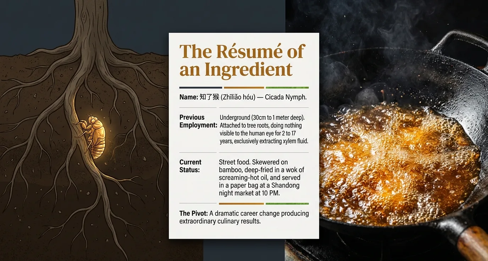

The Résumé

Previous employment: underground.
Name: 知了猴 (Zhiliao Hou). Cicada Nymph. Previous employment: between 30cm and 1 meter below the surface of the soil, attached to tree roots, doing absolutely nothing visible to the human eye for anywhere between 2 and 17 years depending on species. Current status: skewered on a bamboo stick, deep-fried in a wok of screaming-hot oil for three minutes, and handed to you in a paper bag at a Shandong night market at 10pm. The career change is dramatic. The results are extraordinary.